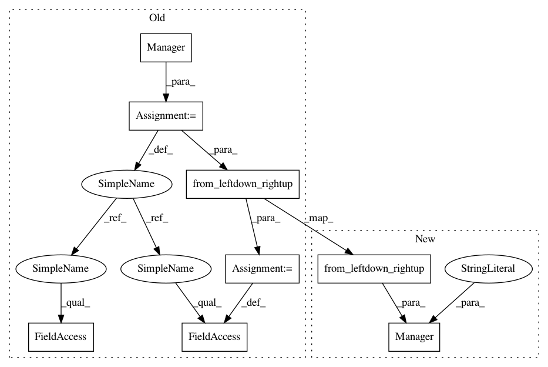

39b982935891b568ca6b9b25007ebf1abf6055bc,tests/role/testManager.py,TestManager,test_with_two_columns,#TestManager#,16
Before Change
self.assertTrue(columns > 2)
def test_with_two_columns(self):
manager = Manager()
node1 = Node("47.0", "8.0", 10)
node2 = node1.add_meter(200, manager._SMALL_BBOX_SIDE_LENGHT + 50)
bbox = Bbox.from_leftdown_rightup(node1, node2)
manager.big_bbox = bbox
columns = manager._calc_columns()
rows = manager._calc_rows()
self.assertTrue(rows == 1)
self.assertTrue(columns == 2)
After Change
def test_with_two_columns(self):
node1 = Node("47.0", "8.0", 10)
node2 = node1.add_meter(200, Manager.SMALL_BBOX_SIDE_LENGHT + 50)
manager = Manager(bbox = Bbox.from_leftdown_rightup(node1, node2), jobqueue_name="dummy")
columns = manager._calc_columns()
rows = manager._calc_rows()
self.assertTrue(rows == 1)
self.assertTrue(columns == 2)
In pattern: SUPERPATTERN
Frequency: 3
Non-data size: 8
Instances
Project Name: geometalab/OSMDeepOD
Commit Name: 39b982935891b568ca6b9b25007ebf1abf6055bc
Time: 2016-05-03
Author: marcelhuberfoo@gmail.com
File Name: tests/role/testManager.py
Class Name: TestManager
Method Name: test_with_two_columns
Project Name: geometalab/OSMDeepOD
Commit Name: 39b982935891b568ca6b9b25007ebf1abf6055bc
Time: 2016-05-03
Author: marcelhuberfoo@gmail.com
File Name: tests/role/testManager.py
Class Name: TestManager
Method Name: test_with_two
Project Name: geometalab/OSMDeepOD
Commit Name: 39b982935891b568ca6b9b25007ebf1abf6055bc
Time: 2016-05-03
Author: marcelhuberfoo@gmail.com
File Name: tests/role/testManager.py
Class Name: TestManager
Method Name: test_with_three